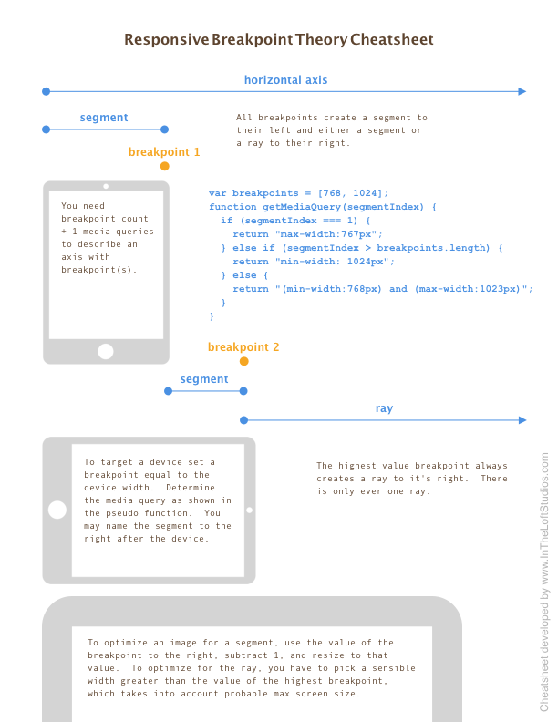

Summary
This project provides a means to define horizontal breakpoints, which will fire JS callbacks when the browser width crosses said breakpoints. It also allows for CSS classes to be applied to designated elements which reflect the current breakpoint. It can be used when you need to do anything in Javascript based on window resizing. The server-side component is useful if you're using a PHP-based CMS for coordinating breakpoints.
A breakpoint is defined as a single point along the horizontal axis. To the left lies a breakpoint segment, and to the right of the hightest value breakpoint lies the breakpoint ray. To the right of all but the highest value breakpoint, likes a breakpoint segment. See the section below Breakpoint Theory.
Visit https://aklump.github.io/breakpointX/ for full documentation.
Quick Start
Install using yarn add @aklump/breakpointx or npm i @aklump/breakpointx
Requirements
- jQuery >= 1.4
Contributing
If you find this project useful... please consider making a donation.
Breakpoint Theory

Download this Cheatsheet by In the Loft Studios
Common Mistakes
- By definition a breakpoint does not have a width, nor does it have a minimum or a maximum; it's just a point.
- I've heard people say breakpoint when they actually mean breakpoint segment or breakpoint ray.
- A CSS media query represents a breakpoint segment or ray not a breakpoint.
Usage
Create a new instance, define breakpoints
// Register three breakpoints that indicate the following:
// - breakpoint segment: 0px - 239px
// - breakpoint segment: 240px - 767px
// - breakpoint ray: 768px +
var bp = new BreakpointX([240, 768]);
Find the breakpoint by a horizontal, x value.
var alias = bp.alias(240);
// alias === '(min-width:240px) and (max-width: 767px)';
var alias = bp.alias(200);
// alias === 'max-width: 239px';
var alias = bp.alias(300);
// alias === '(min-width:240px) and (max-width: 767px)';
var alias = bp.alias(1080);
// alias === 'min-width: 768px';
Register a callback to fire
// When the window crosses 768 getting smaller
bp.add('smaller', ['(min-width:240px) and (max-width: 767px)'], function () {
console.log('Now you\'re in (min-width:240px) and (max-width: 767px)!');
});
// When the window crosses 768 getting bigger
bp.add('bigger', ['(min-width:240px) and (max-width: 767px)'], function () {
console.log('Now you\'re in (min-width:240px) and (max-width: 767px)!');
});
// When the window crosses any breakpoint in either direction
bp.add('both', bp.aliases, function (from, to, direction) {
console.log('Now you\'re in: ' + to.name);
console.log('Window just got ' + direction);
});
Alternative: Create a new instance with named segments
When you construct an instance of BreakpointX using only numbers, you simply list the breakpoints and the names are autogenerated. However, it is possible to name your breakpoint segments and breakpoint ray when you construct BreakpointX by passing an object instead. The keys of the object are the segment names and the ray name, and the values are the breakpoints with a final value of Infinity to represent the ray.
The following example defines:
- A breakpoint ray named small
- A breakpoint at 240px
- A breakpoint segment named medium
- A breakpoint at 768px
- A breakpoint ray named large
Here is the code:
var bp = new BreakpointX([{small: 240, medium: 768, large: Infinity}]);
Add a class to an element reflecting the current breakpoint
var bp = new BreakpointX([{mobile: 768, desktop: Infinity}], {
addClassesTo: 'body'
});
The body element will look like this when the browser gets larger and crosses 768px.
<body class="bpx-desktop bpx-bigger">
PHP
For PHP usage the namespace AKlump\\BreakpointX should map to node_modules/@aklump/breakpointx/dist. Here's an example for composer.json.
{
"autoload": {
"psr-4": {
"AKlump\\BreakpointX\\": "node_modules/@aklump/breakpointx/dist"
}
}
}